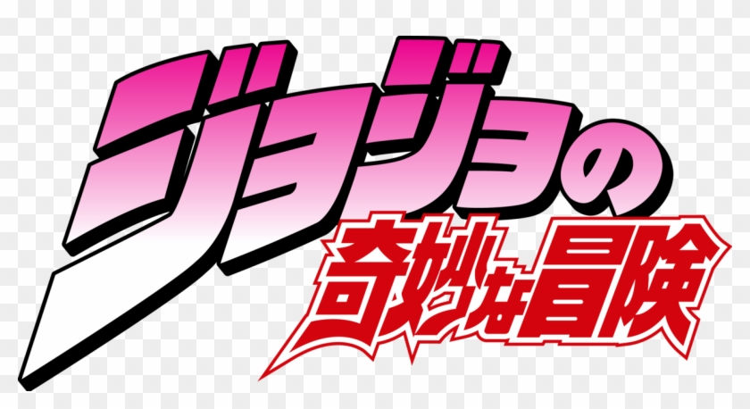

Página Inicial
Filmes
Séries
Desenhos

OBSERVAÇÕES PESSOAIS SOBRE O ANIME
Enzo Ruy: Vitor Spinola: Lucas Souza: Esta série/anime é muito chamativa, principalmente por seu enredo e desenvolvimento de personagens.